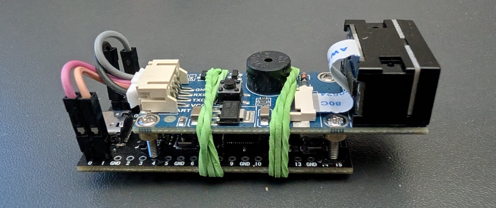
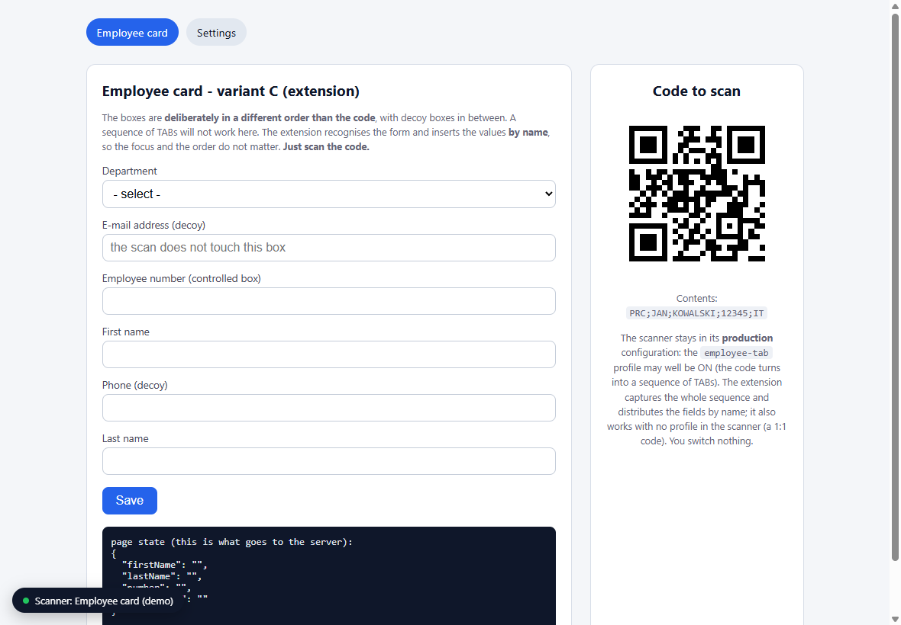
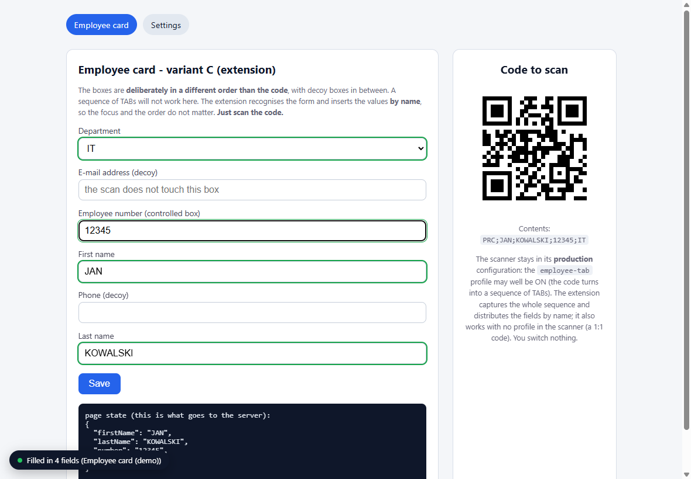
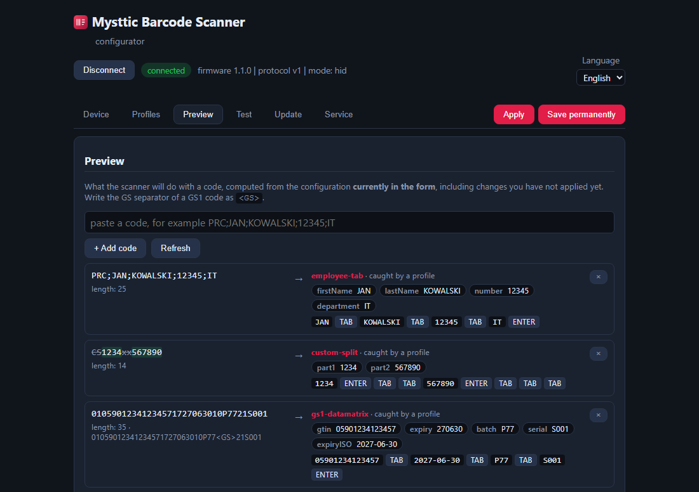

A USB barcode scanner that does not just type a number. It recognises the code, splits it into fields and puts each one where it belongs.
No drivers, no host software. The computer sees a keyboard.

Latest release: checking…
Everything at once: the firmware, the configurator, the browser extension, the Windows agent and the manuals. This is the one to take the first time.
Download package
Just the .uf2, for a scanner that is already put together.
Hold BOOT, plug the board in, drop the file on the disk that appears.
The configurator's Update tab hands you this same file.
The extension on its own, for Chrome and Edge: it fills a page's form by field name and learns a new form in three steps. Unpack the ZIP and load the folder as an unpacked extension; a newer one goes over the same folder.
Download extensionThe Windows agent on its own: fills forms in desktop applications by field name, and keeps itself up to date from here. Optional, the scanner types into any window without it.
Download agentA portable Windows application for practising with the desktop agent, with forms to scan into. Optional; the scanner works without it.
Download demoThis is firmware for a device you put together yourself, not an appliance in a box: without the boards under Hardware the download has nothing to run on. Newer releases are found from inside: the configurator's Update tab, the extension's options and Updates in the agent's tray menu each have “Check now”, and a daily check you can turn on. The agent then replaces itself; the firmware and the extension are one file each, swapped by hand. The interfaces are in English, with Polish as a second language.
An off-the-shelf scanner types one string and stops there. This one knows what it just read, and has four ways of getting it into a form.
Plug it in and it types, on any system that accepts a USB keyboard. No driver, nothing to install on the host. It reads a code held in front of it and does not type the same one twice.
Profiles recognise the kind of code and split it: GS1 into product number, expiry date, batch and serial, others by separator or by character position. The fields go out with TAB and ENTER between them, as slowly as the application needs.
The scanner shows up as a small disk with the configurator on it. Build the profiles, see in Preview what a code turns into, try it in Test and save it to the device. Nothing is installed to do it.
Decoy boxes or a shuffled order defeat a run of TABs. The browser extension puts each value in its field by name, and learns a new form in three steps: scan, name the parts, point at the boxes.
An optional tray agent fills the controls of desktop applications by name. It learns a new application from one fill you do by hand while it records.
An agent macro can send the scan to your HTTP endpoint and type back the answer, so one scan registers a code in one system and fills the returned number into another. Nothing is sent until you set it up.
Four ways into a form, from the simplest: A, the scanner types the fields with TAB, into any application with a fixed order of fields; B, a page whose code you own spreads them by name with a short script; C, any page in Chrome or Edge, single-page apps included, through the extension; D, the controls of Windows applications, kiosk mode included, through the agent.
The four ways in 77 seconds, then one form before and after a scan.



Two boards and a cable. The scanner module is the expensive part and the one that decides which symbologies you can read.
Ours is a YD-RP2040, a Pico clone with USB-C. Any RP2040 board with native USB runs the same firmware; one that reaches the computer through a USB-serial bridge cannot present itself as a keyboard.
Built against a Waveshare 14810; GM65 and GM805 behave the same way and take the same configuration codes. Its JST harness meets the board through four jumpers on a breadboard, UART crossing over.
A charge-only cable is the most common reason nothing happens. Nothing else is fitted; an LED and a push button are optional, for status and factory reset.